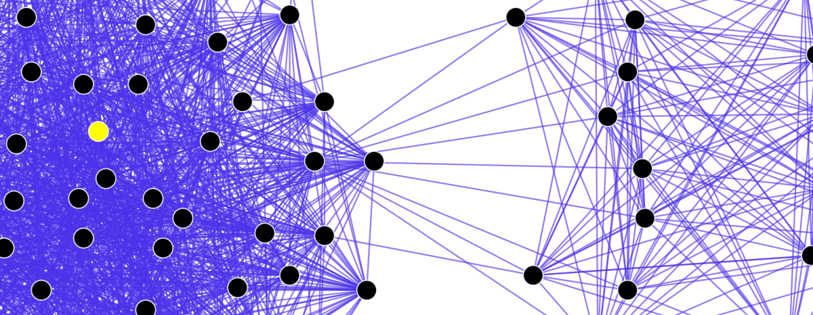

ASSIGNMENT #4 STORY: The Limits of Social Constructivism in STS
For the third assignment in INF302, we were tasked with reading response that demonstrates our
knowledge of the texts and provides a critical and formal reflection on a weekly theme (in the
course). This would be achieved through comparative analysis of the readings. For
this assignment, we wrote a 1200-1500 word response to one of the required readings assigned in
this course. The response should cover the following:
- Introduction that includes an overview of the required reading selected, plus a preview of
the main arguments.
- Review and comparison of the selected reading with the additional academic literature
gathered
- A clear description of your response – i.e. argument(s) or position(s) on key
arguments/tensions was identified in the course reading. The response should be firmly
grounded in theory, previous arguments, and/or research findings derived from peer-reviewed
academic works.
- A conclusion that summarizes the main points and suggests a way forward or
some other form of recommendation for future students of this course.

Social Networks in Structuralist Theory, Courtesy of DarwinPeacock,
Maklaan (Wikipedia)
Sismondo and Social Constructivism
I chose to write my assignment on Sismondo’s Chapter 6, "The Social Construction of Scientific
and Technical Realities" in his book Introduction to Science and Technology Studies.
Sismondo
argues that social constructivism provides three important assumptions for STS. Firstly, STS is
social. Secondly, STS is active. Thirdly, the products of STS are natural. I will take on each
of these points and provide my thoughts and arguments for them.
Social Constructivism and Anthropocentricity
Firstly, Sismondo claims that STS itself is social. I claim this is too anthropocentric and it
neglects nature to speak for itself. Some things are best left as “the way it is” and natural
explanations are sufficient. We do not need to over complicate things by incorporating human
factors.
The activity of STS
Secondly, Sismondo claims that STS is active. This is true, there is always an active component
for driving STS development. However, I disagree when he mentions the heterogenous
constructivist nature of STS. I find this problematic and argue that some things cannot be
explained from a constructivist standpoint. Quantum mechanics cannot be explained by
constructivists, yet we can see the activity of STS in this regard.
STS, Nature, and Natural Limits
Lastly, Sismondo claims that the products of STS are not natural. I disagree and claim that
social constructivism is flawed and incomplete. We can incorporate pragmatic and critical
realist ideas to fill the gaps that constructivism has. Only then, we can see that the problems
of social constructivism are neglecting nature and predetermined natural limits. As a result,
all products of STS must be within natural limits.
PDF